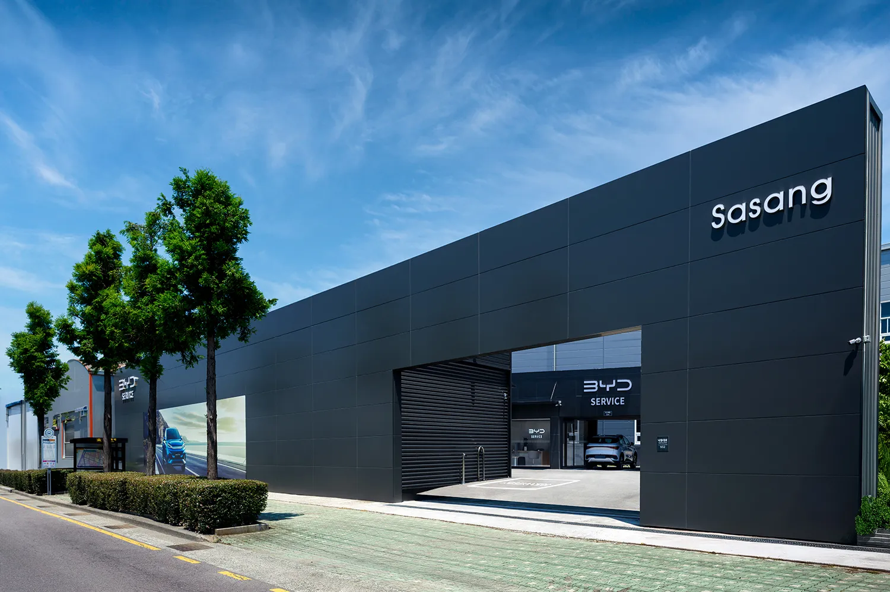
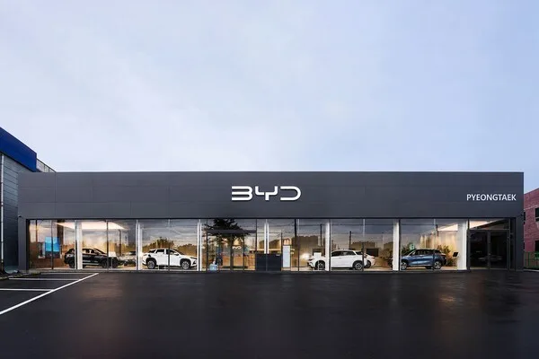

▲ 컨슈머인사이트 조사에서 토요타가 AS·판매서비스 만족도 부문 모두 1위에 올랐다 ⓒ Toyota
컨슈머인사이트 제26차 연례 조사, 토요타 AS·판매서비스 동시 1위
자동차 리서치 전문기관 컨슈머인사이트가 발표한 '제26차 연례 자동차 기획조사'에서 토요타가 애프터서비스(AS) 만족도와 판매서비스 만족도 두 부문 모두 1위에 올랐다. 이번 조사는 최근 새 차를 구매한 소비자 6,569명과 서비스센터 이용 경험이 있는 3만5,435명을 대상으로 진행됐다.
AS 만족도 부문에서 토요타는 859점을 기록하며 1위를 차지했고, 렉서스와 볼보가 858점으로 공동 2위에 올랐다. 이어 혼다(843점), 포드(817점) 순이었으며, 메르세데스-벤츠와 랜드로버는 811점으로 공동 10위, 링컨은 산업 평균과 같은 808점으로 13위에 그쳤다.

▲ 렉서스는 AS 만족도 858점으로 볼보와 공동 2위에 올랐다 ⓒ Lexus
판매서비스 만족도, BYD가 첫 평가만에 3위
판매서비스 만족도 부문에서도 토요타가 850점으로 1위를 지켰고, 렉서스가 839점으로 2위를 차지했다. 눈에 띄는 것은 3위에 오른 BYD(835점)다. 지난해 4월 국내 판매를 시작한 BYD는 이번이 첫 판매서비스 평가였는데, 진입 1년 반도 안 돼 렉서스에 이어 3위에 오르며 업계를 놀라게 했다.
이어 볼보(829점), 벤츠(802점), 한국지엠·르노코리아(793점, 공동 6위) 순이었으며, 제네시스(787점)와 현대차·BMW(786점, 공동 9위), 기아(781점)는 산업 평균(780점)에 근접하거나 소폭 웃도는 수준에 머물렀다. 산업 평균은 전년 대비 2점 하락한 것으로 나타났다.
BYD, 국내 서비스망 빠르게 확충 중
BYD가 첫 평가에서 3위를 차지한 배경에는 공격적인 서비스망 확충이 자리한다. BYD코리아는 국내 진출 이후 판매 전시장과 별도로 전담 서비스센터를 전국 주요 거점에 순차적으로 열며 AS 인프라를 빠르게 늘려왔다. 평택·용인 등 수도권은 물론 부산 사상, 청주, 포항, 의정부 등 지방 거점에도 서비스센터를 마련해 '판매는 늘지만 AS는 부실하다'는 신생 수입차 브랜드의 일반적 우려를 상당 부분 불식시켰다는 평가가 나온다.

▲ 부산 사상에 위치한 BYD 서비스센터. 지방 거점까지 AS망을 빠르게 넓힌 점이 첫해 3위의 배경으로 꼽힌다 ⓒ BYD코리아

▲ 평택 BYD 오토 전시장. 판매망과 서비스망을 동시에 확충하는 전략이 만족도 조사 결과로 이어졌다는 분석이다 ⓒ BYD코리아
다만 BYD의 판매서비스 만족도가 AS 만족도 상위권(1~13위)에는 포함되지 않았다는 점은 눈여겨볼 대목이다. 이는 서비스센터 이용 경험 데이터가 축적되기까지는 시간이 더 필요하다는 방증으로, 진입 초기의 판매서비스 만족도만으로 장기적인 AS 품질까지 단정하기는 이르다는 신중론도 있다.
토요타·렉서스 강세, 신뢰의 축적 결과
토요타와 렉서스가 AS·판매서비스 양쪽에서 최상위권을 지킨 것은 국내 진출 이후 오랜 기간 쌓아온 서비스 품질 관리의 결과로 풀이된다. 토요타는 앞서도 여러 해 판매서비스 만족도 상위권을 지켜온 바 있으며, 이번 조사에서도 두 부문을 동시에 석권하며 국내 수입차 서비스 분야의 기준점 역할을 이어갔다.
반면 국산 브랜드인 현대차·기아·제네시스가 산업 평균 수준에 머문 점은 대조적이다. 판매망과 서비스 인프라 규모 면에서 압도적 우위에 있음에도 만족도 점수는 상대적으로 낮게 나타난 것으로, 규모의 우위가 곧바로 만족도로 이어지지는 않는다는 점을 보여준다.
수입차 서비스 경쟁 구도에 미치는 영향
이번 조사 결과는 국내 수입차 서비스 시장의 경쟁 구도가 새롭게 재편되고 있음을 시사한다. 전통적으로 강세를 보여온 토요타·렉서스·볼보 3사의 경쟁에 BYD가 신흥 강자로 가세하면서, 다른 수입 브랜드들도 서비스망 투자를 확대할 유인이 커졌다는 분석이다. 조사 상세 결과는 지피코리아에서 확인 가능하다.